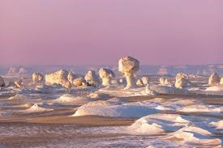
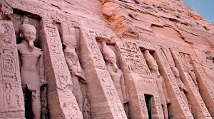
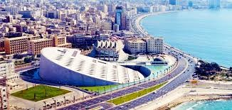
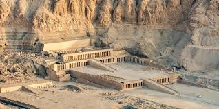
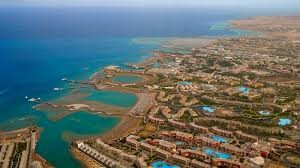
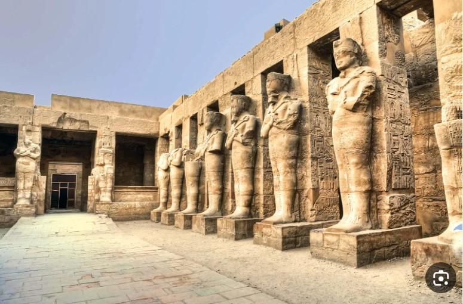
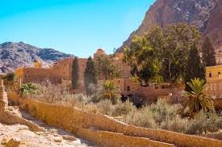
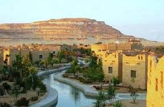
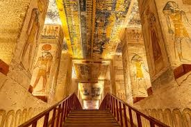

Pyramids of Giza
Date of Construction: Around 2580–2560 BC
Governorate: Giza
The Pyramids of Giza are among the Seven Wonders of the Ancient World. They were built as tombs for the
pharaohs Khufu, Khafre, and Menkaure.
The Great Pyramid was the tallest man-made structure for over 3,800 years. Nearby lies the Great Sphinx.
They remain symbols of ancient Egyptian engineering genius.
|

White Desert
Date of Formation: Prehistoric times
Governorate: New Valley
The White Desert is known for its surreal white chalk rock formations. These shapes were formed by wind
erosion over thousands of years.
The desert is a protected area and popular for camping. It offers stunning views under the moonlight. It
is a favorite spot for photographers and adventurers.
|

Abu Simbel
Date of Construction: Around 1264 BC
Governorate: Aswan
Abu Simbel is a massive rock temple built by Pharaoh Ramses II. Famous for its four colossal statues, the
temple aligns with the sun twice a year.
It was relocated in the 1960s to save it from flooding caused by the Aswan High Dam. The interior is
decorated with scenes of battles and ceremonies.
|

Alexandria Library
Date of Construction: 2002
Governorate: Alexandria
The Bibliotheca Alexandrina is a modern revival of the ancient Library of Alexandria. It is a major
cultural center housing millions of books.
The site includes museums, a planetarium, and art galleries. Its architecture symbolizes the sun rising
over the Mediterranean.
|

Citadel of Saladin
Date of Construction: 1176 AD
Governorate: Cairo
The Citadel of Saladin was built to protect Cairo from Crusader attacks. It served as Egypt’s seat of
government for centuries.
The site houses the famous Mosque of Muhammad Ali. Its walls and towers offer panoramic views of Cairo.
|

Dahab
Date of Establishment: Ancient fishing village, modern resort since 1980s
Governorate: South Sinai
Dahab is a small town on the southeast coast of the Sinai Peninsula. Known for diving and snorkeling, it
attracts tourists from around the world.
|

Egyptian Museum
Date of Construction: 1902
Governorate: Cairo
The Egyptian Museum houses the world’s largest collection of Pharaonic antiquities. It includes treasures
from the tomb of Tutankhamun.
|

Fayoum Oasis
Date of Development: Ancient times
Governorate: Fayoum
The Fayoum Oasis is Egypt’s largest oasis, famous for Lake Qarun. It has been inhabited since ancient
times.
|

Hatshepsut Temple
Date of Construction: 15th century BC
Governorate: Luxor
The Mortuary Temple of Hatshepsut is dedicated to one of Egypt’s few female pharaohs.
|

Hurghada
Date of Development: 20th century
Governorate: Red Sea
Hurghada is a popular Red Sea resort town. It is known for its sandy beaches and coral reefs.
|

Karnak Temple
Date of Construction: Started around 2000 BC
Governorate: Luxor
Karnak Temple is the largest religious complex in ancient Egypt. The Hypostyle Hall is one of its most
impressive features.
|

Louvre Museum (Egyptian Section)
Date of Collection: Established 1793
Location: Paris, France
The Louvre Museum houses a significant collection of Egyptian antiquities.
|

Luxor City
Date of Establishment: Ancient Thebes
Governorate: Luxor
Luxor is often called the world’s greatest open-air museum. It is home to the Karnak and Luxor temples.
|

Montaza Palace
Date of Construction: 1892
Governorate: Alexandria
Montaza Palace was built as a summer residence for the Egyptian royal family.
|

Mount Sinai
Date of Religious Significance: Biblical times
Governorate: South Sinai
Mount Sinai is believed to be the place where Moses received the Ten Commandments.
|

Nubian Museum
Date of Opening: 1997
Governorate: Aswan
The Nubian Museum showcases the culture and history of Nubia.
|

Philae Temple
Date of Construction: 380 BC
Governorate: Aswan
Philae Temple is dedicated to the goddess Isis. It was moved to Agilkia Island to save it from flooding.
|

Saint Catherine
Date of Establishment: 6th century AD
Governorate: South Sinai
Saint Catherine’s Monastery is one of the oldest working Christian monasteries.
|

Sharm El Sheikh
Date of Development: Late 20th century
Governorate: South Sinai
Sharm El Sheikh is a major tourist resort on the Red Sea. It is famous for diving and snorkeling.
|

Siwa Oasis
Date of Inhabitation: Ancient times
Governorate: Matrouh
Siwa Oasis is known for its unique culture and language.
|

Valley of the Kings
Date of Use: 16th to 11th century BC
Governorate: Luxor
The Valley of the Kings served as the burial site for New Kingdom pharaohs. It contains over 60 tombs.
|

Wax Museum
Date of Opening: 20th century
Governorate: Giza
The Wax Museum in Egypt displays lifelike wax figures of historical and cultural figures.
|